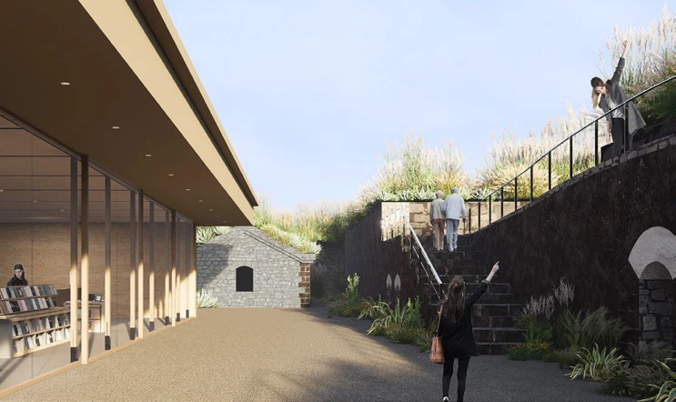
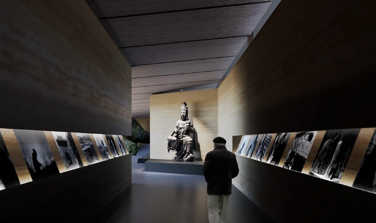
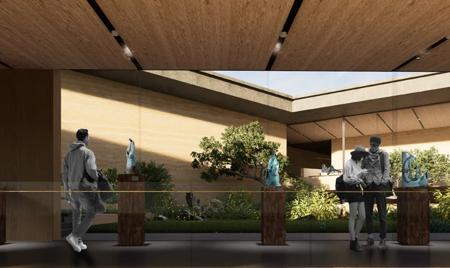
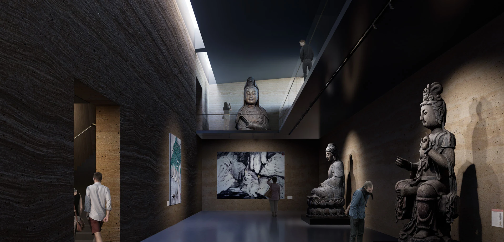

Erdai Art Museum
How can a landscape of defence become a place of reflection?
The Erdai Art Museum places a collection of art within the inherited ground of the Dashan battery on the Fenggui Peninsula. Arrival begins at the former support area; a partly buried gallery sequence connects courts, adapted emplacement spaces and a tunnel toward the southern sea view. The museum follows the terrain instead of assembling every activity in a freestanding object. Its design works through differences of light, enclosure and outlook while retaining the distinction between surviving military fabric and new intervention.
An inherited ground.
Existing support spaces, trenches and artillery positions organise the visitor route. The former support area becomes an arrival and ticketing point, while selected emplacement spaces are adapted for outdoor sculpture. New galleries occupy a different relationship to the ground, connecting inherited elements without reconstructing a seamless military complex.
The layout is also a curatorial sequence. Ink, photography, ceramics, calligraphy and other works encounter different depths of daylight and different views. Courts provide orientation toward the battery and admit indirect light; the later tunnel and coastal room return the visitor to the horizon. The historic investigation and conservation report inform the site reading, while these spatial and curatorial choices belong to the proposal.
From darkness
to light.
01 / Trench





The sequence shown here is a design interpretation of the site and collection. Archaeology, structural condition, coastal drainage, object conservation and accessible circulation would need coordinated assessment before implementation.
Project credits
Individual studio project · Hao Chang
Instructor: Li Xiaodong
Penghu, Taiwan · September–October 2024
Spirited A Way